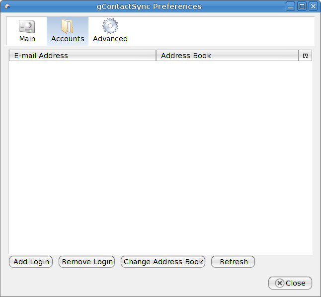
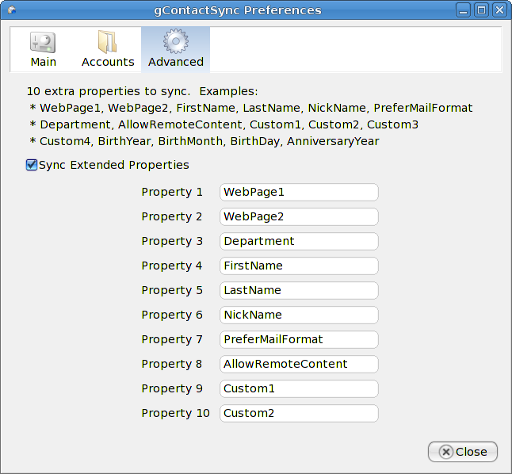

gContactSync - Preferences
To access the Preferences
- Open Thunderbird if necessary
- Go to the Tools menu and left-click on Add-ons
- Select gContactSync from the list of add-ons and click the Preferences or Options button
Preferences
There are three tabs for preferences. The label of the preference is in bold, followed by a space and the default value in parentheses.
Main Preferences
- Name of the Address Book (Google Contacts)- Choose a name for the Address Book to sync with.
- Synchronize Interval (30)- Choose the length of time you would like to pass between the end of one synchronization and the start of the next. Set to 0 to disable all scheduled synchronization except for the first sync when the Address Book window is open (see #3).
- Initial Sync Delay (500) - The length of time, in milliseconds, after the Address Book opens before your contacts are synchronized. Set to 0 to disable synchronizing when the Address Book window opens. If this is set to 0, there will be no automatic syncing until you press the button manually.
- Always update Gmail during conflicts (checked) - Check this if Gmail should be updated if a contact is updated in both Gmail and Thunderbird. In other works, give Thunderbird priority over Gmail.
- Confirm before deleting duplicates (checked) - Check this is you would like to be asked before duplicates are deleted. Google only allows one contact per e-mail address, so you cannot have two contacts with the same e-mail address. You will be asked about it until you change the offending e-mail address(es).
- Sync extended properties (checked) - Check this to synchronize attributes that Thunderbird has, but Google doesn't. You won't be able to see them from Gmail (possibly in the future?), but it is possible to add up to 10 extra attributes.
- Enable automatic synchronization (checked) - Check this to enable automatic synchronization. If it is disabled, Synchronize interval and Initial sync delay are ignored and the extension will only synchronize your contacts when you click the Sync button in the toolbar of the Address Book window. This is not present in the first test release.
- Synchronize Groups with Mailing Lists - Check this to enable synchronizing Groups in Google Contacts with Mailing Lists in Thunderbird. Please note that mailing lists are somewhat buggy. If you delete an address book that contains a mailing list you must restart Thunderbird (not just the Address Book window) before doing anything else, especially synchronizing.
Accounts

This tab will help you to add, remove, or change accounts and the address books with which they are synchronized
Extended Preferences

Google allows storing 10 custom attributes, although you cannot see them from Gmail. I suggest you leave them alone unless you are familiar with the address book source code unless you want to replace something with Custom3 or Custom4 or ask me. The values must be the name of the attribute in Thunderbird. Here are the defaults:
- WebPage1 - The work website
- WebPage2 - The home website
- Department - The department the contact is in at work
- FirstName - The contact's first name
- LastName - The last name of the contact
- NickName - The contact's nickname
- PreferMailFormat - The preferred mail format (unknown, HTML, or text)
- AllowRemoteContent - A boolean value to determine if remote content is allowed from this contact
- Custom1 - The first custom attribute
- Custom2 - The second custom attribute